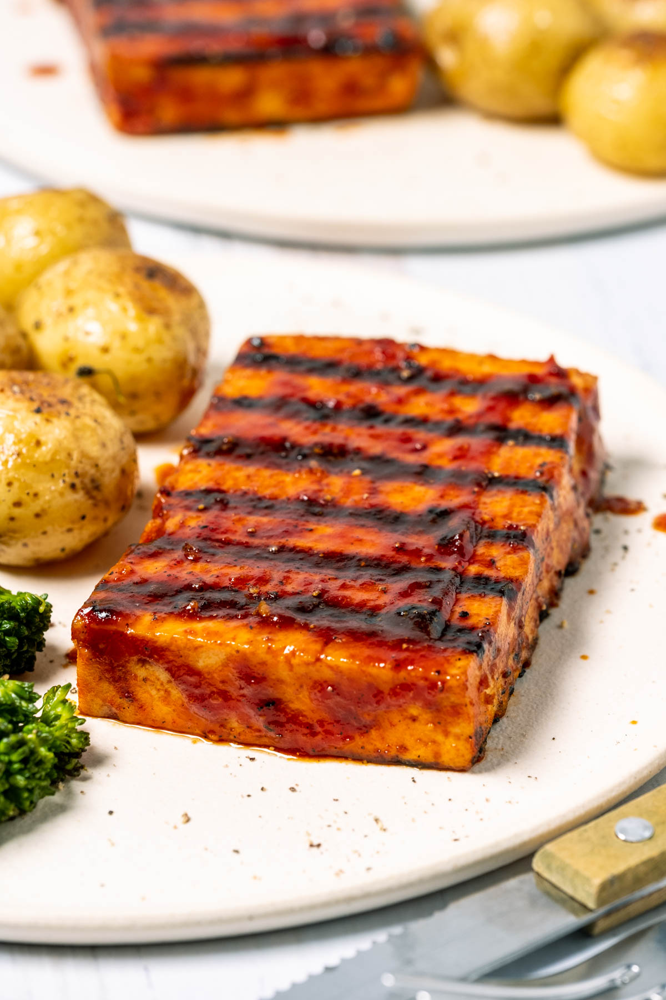

Tofu Steaks

This is the best recipe for tofu steak ever! Marinated in
a fabulous sesame soy marinade sauce and seared in a
grill pan for beautiful grill lines and locked in flavor.
Ingredients
Tofu Steaks:
- 1 block extra firm tofu
- Sesame oil for frying
Marinade Sauce:
- sesame oil
- soy sauce
- tomato paste
- maple syrup
- garlic
- liquid smoke
- salt
- black pepper
Steps
- Press the tofu
- Prepare the marinade sauce
- Slice the tofu into steaks
- Marinate the tofu steaks
- Heat sesame oil in a grill pan
- Grill tofu steaks